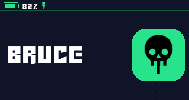
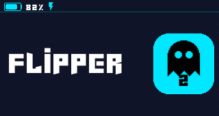
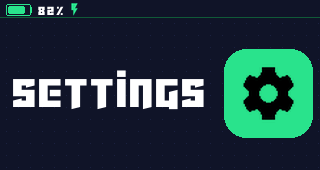
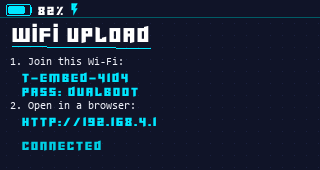
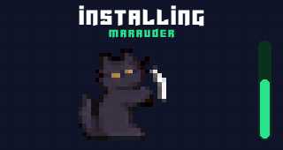

A launcher that always boots first, then runs Bruce, the Flipper port, or anything else you drop on the SD card. Three slots, switchable in seconds — and you can never lock yourself out.

Real screens from the device — 320×170, redrawn from a PSRAM framebuffer so nothing flickers.




A custom second-stage bootloader hands control back to the launcher on every normal reset. Power-cycle and you're home, whatever the app did.
Install any ESP32-S3 firmware from the SD card, name it, give it an icon, boot it. Both full flash images and bare app images work.
The launcher hosts its own Wi-Fi hotspot with an upload page, or exposes the SD card as a USB drive. Add firmware from your phone.
Colours, icons and the boot animation are all replaceable from the SD card — build a theme in the browser and upload it.
Writes the launcher at offset 0x0. Bruce and the Flipper port are
not included — you add those afterwards, from the SD card.
Watch the device's output at 115200 baud — handy when a firmware misbehaves. Disconnect before flashing; only one program can hold the port.
Download a .bin, put it on the SD card (or upload it over Wi-Fi),
then on the device: Install → pick file → pick slot.
Wi-Fi, BLE, Sub-GHz over the CC1101, RFID/NFC and IR tooling.
Furi OS ported to the ESP32-S3, with the original UI and app structure.
sdcard.zipAny ESP32-S3 image up to 4.5 MB works — full flash images and bare app images alike.
Update to launcher v1.1.0 or newer. Older builds assumed every .bin was a
full flash image and skipped the first 64 KB, which broke bare app images such as
furi_esp32.bin. Current builds detect the layout and tell you the actual
reason if something else is wrong.
Windows encrypts files copied to removable drives when the source folder has the
“Encrypt contents” attribute — they land as .PFILE and can't be read. Right-click
your Downloads folder → Properties → Advanced → untick Encrypt contents to secure
data, then copy again.
A failed install erases the slot before writing, so it really is empty — reinstall. If the
slot boots but shows no name, you're on an old build; newer ones label it
App 2.
Something else is holding it — usually another browser tab with a flasher open, or a serial monitor. Close it, or unplug and replug the device.
Themes live in /catcolor on the SD card, not /themes — Bruce uses
that one for its own themes. The Theme menu will tell you what it found.